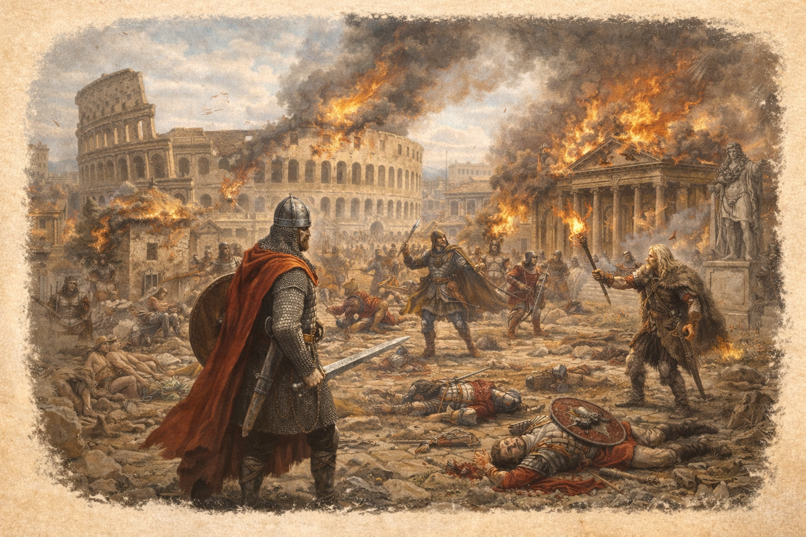
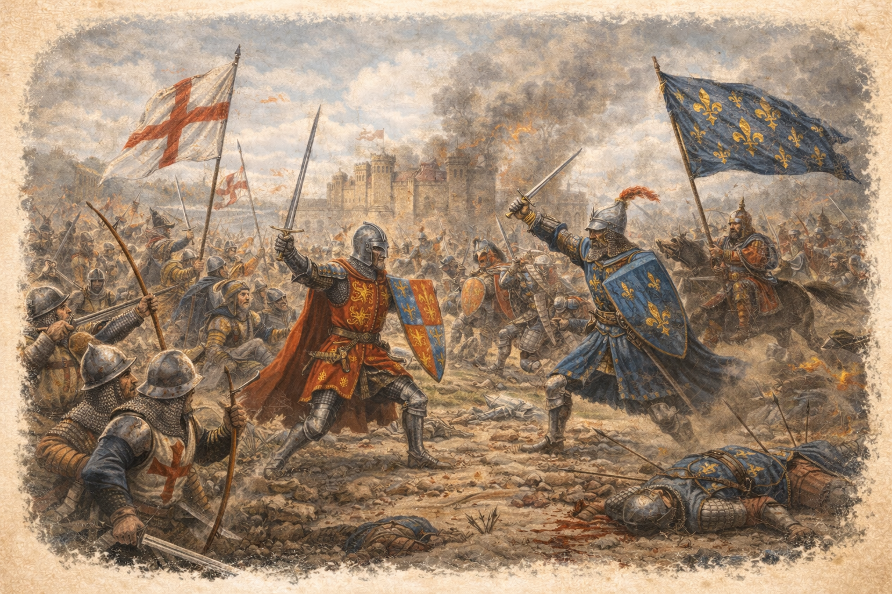
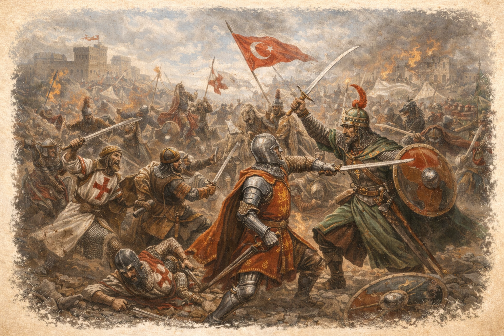
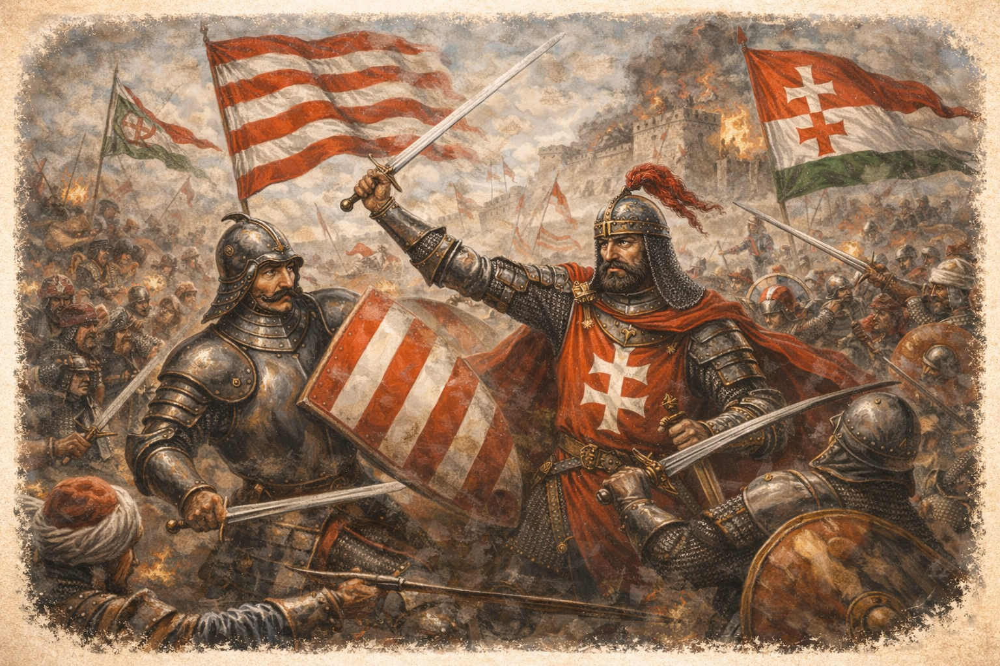
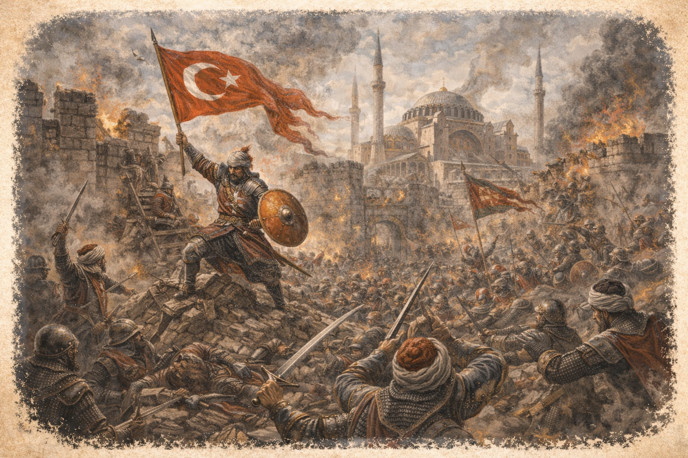

476 - a nyugatrómai birodalom bukásának éve.az egyház és a pápa tekintély megszilárdulása.

1337-től 1453-ig A konfliktus az Anglia és Franciaország között zajlott, főként a francia trón öröklése és a francia területek birtoklása miatt.

Nikápolyi csata 1396 A nyugat-európai keresztes lovagok súlyos vereséget szenvedtek az Oszmán sereggel szemben.

A magyar–keresztény seregek megvédték Nándorfehérvár várát az Oszmán Birodalom hatalmas haderejével szemben.

Konstantinápoly eleste 1453 Az Oszmán Birodalom seregei elfoglalták a várost, ezzel véget vetve a Bizánci Birodalom fennállásának.